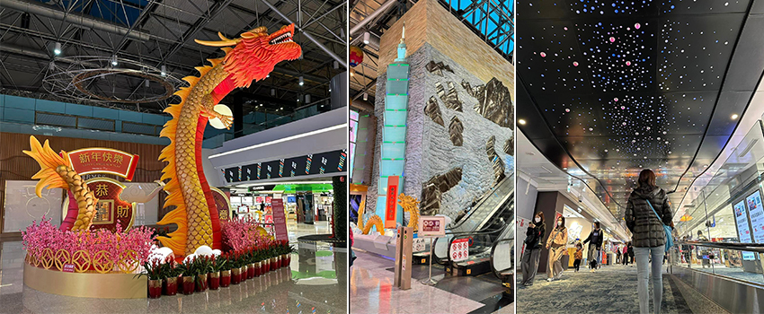
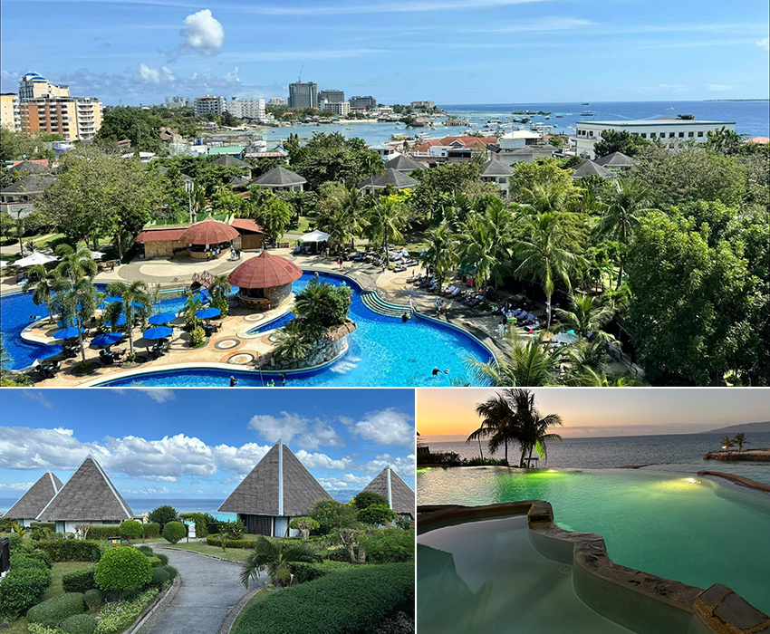
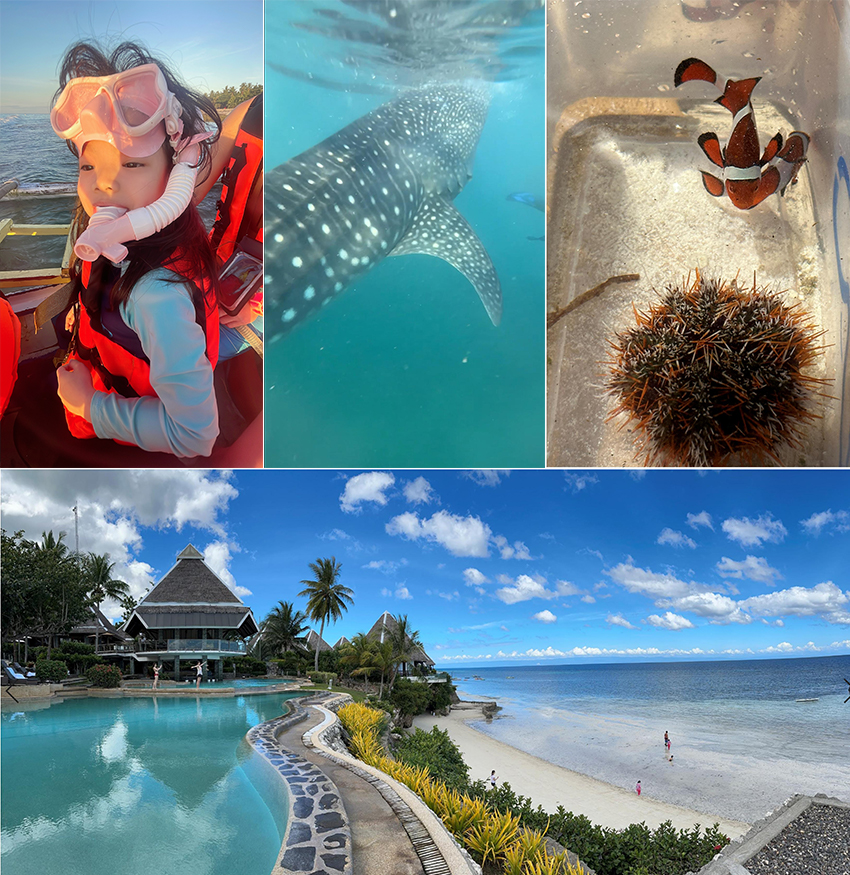
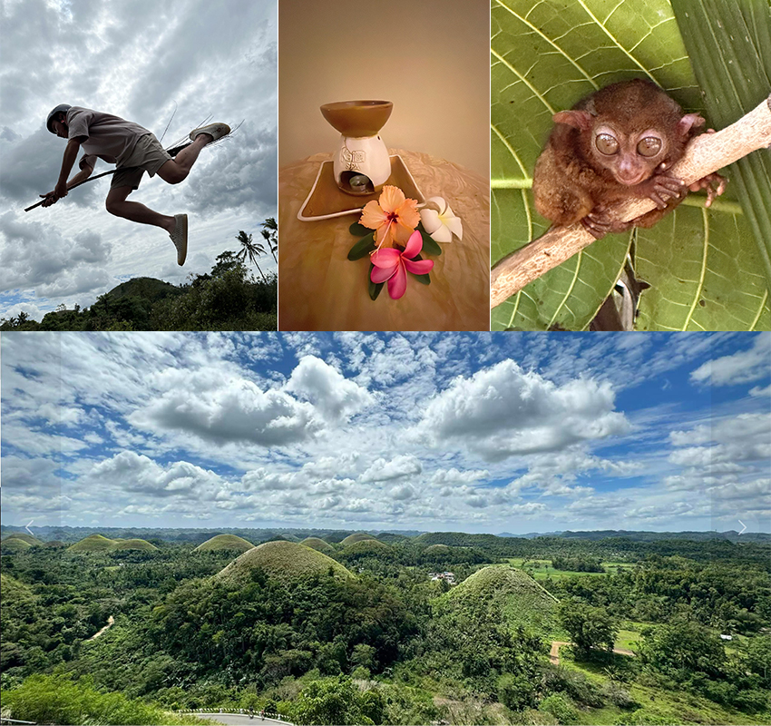

疫情解封，睽違多年旅遊總算成行，首選日本，但可惜機票飯店都不在預算掌握內，變更行程滑雪為浮潛，當然也少不了陽光、沙灘、比基尼。介紹一下台灣的鄰居菲律賓，主要目的地保和島也稱薄荷島，位於菲律賓群島中部的一個島嶼，西北與宿霧島相望，為菲律賓第十大島。
年假旅遊旺季，提前三小時到桃園機場候機，多出閒暇時間逛免稅店，機場內充滿濃濃年節氣氛，過海關檢驗後即可見以龍為主題打造的裝置藝術「昇龍獻瑞」活靈活現，令人驚艷！想必人潮重現機場展現活潑的年節氛圍應該還會持續一段時間。
|  |
宿霧
一直以來都是台灣人的熱門度假勝地＂宿霧＂，搭乘直飛的航班對自由行來說相當方便，宿霧Cebu為菲律賓第2大城，素有「南方皇后市」美譽，也是菲律賓天主教的起源地。滿適合自由行新手，包含像是官方語言是英文、沒有時差、直飛航班選擇多，加上平價的消費水平和豐富的玩法。選擇住靠近海邊的飯店，非常悠閒行程一天兩個景點，自由行無訴求能睡到自然醒跟豬一樣的餵食。
|  |
薄荷島
出發！薄荷島四周有七十個小島，是世界級的三大潛水勝地之一。清晨四點半就起床五點集合，小朋友們已經迫不及待催促「金莎」、「金莎」恍神半睡半醒的想說，怪了！一路上給的巧克力都是GODIVA又沒帶金莎，突然意識清醒了＂鯨鯊＂，真搞笑。
夢想清單解鎖！體驗近距離探索鯨鯊，浮潛水裡看著呆萌的鯨鯊在身旁游來游去，真的是人生夢幻體驗啊！來一則都市傳說，話說看鯨鯊，天剛亮衝第一梯比較好，因為漁夫會灑誘餌餵鯨鯊靠近覓食，等鯨鯊出現遊客可以待船上或浮潛觀賞，當餵食一段時間鯨鯊吃飽了，海裡就會有剩飯，當比較慢才到的旅客這時下水就泡混濁在海裡，好吧！想像一下是不是一鍋的海鮮濃湯…
|  |
眼鏡猴 / 巧克力山
探索過海底世界，賞鯨鯊、海龜還是尼莫、海灘網美點、美食饗宴最重要的還有「當地文化」的真實感受，搭竹筏船探索原始叢林羅伯河吃漂流河午餐，進入保護區棲息地觀賞可愛的眼鏡猴和美麗的自然風光。全世界最小的眼鏡猴，體型非常迷你，只有手掌般大小，卻有著大而圓的眼睛，當刻意對到眼時總覺得它在瞪人，告訴遊客牠上夜班你不要吵我啦…
巧克力山稱7大世界奇景， 島上的巧克力山是電影《哈利 • 波特》的取景地，總是不能免俗的要騎乘一下飛天掃帚「光輪2000」飛越巧克力山照片來一張。
|  |
旅遊心的得，看不同的錦繡風景，看各地的風俗人文，俗話說讀萬卷書不如走萬里路， 其實真踏出去的時候就感受到了，親身的經歷跟別人的經歷與感想是不一樣的。對我而言，就是遠離城市的喧囂，擺脫日常點對點生活、縱情山水間，直白說當然就是耍廢，這趟旅行在當地吃吃喝喝，最常的當然是＂馬傻雞＂ （massage），要有口音，來跟著唸＂馬傻雞＂這對了！